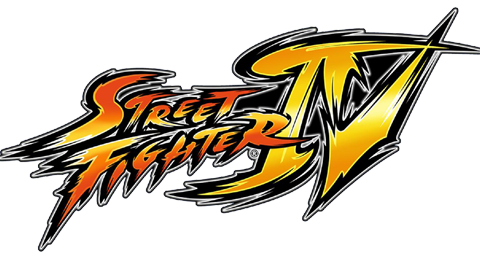

Vanilla
Desbloqueio de Personagens Secretos
Você pode desbloquear todos os personagens em qualquer dificuldade (inclusive "Easiest") e usando 1 round por luta.
Personagens Secretos
| Personagem | Como desbloquear |
|---|---|
| Cammy | Zere o modo Arcade com Crimson Viper |
| Fei Long | Zere com Abel |
| Gen | Zere com Chun-Li |
| Rose | Zere com M. Bison |
| Sakura | Zere com Ryu |
| Dan | Zere com Sakura |
| Akuma | Após liberar os 6 acima, jogue o Arcade com qualquer personagem já zerado, sem continues, sem perder rounds, e conquiste ao menos 1 Perfect (em 1 round) antes de enfrentar Seth. |
| Gouken | Depois de desbloquear e zerar com Akuma, jogue novamente com um personagem já zerado: sem continues, sem perder rounds, consiga: 1 Perfect, 3 Ultra/Super Finishes e 5 First Attacks (valores para 1‑round). Depois de vencer Seth, aparecerá o desafio contra Gouken. |
| Seth | Zere o modo Arcade com todos os personagens (incluindo Akuma e Gouken). |
Resumo Rápido
1
Zere Arcade com Viper, Abel, Chun‑Li, Bison, Ryu e Sakura para liberar Cammy, Fei Long, Gen, Rose, Sakura e Dan.
2
Para Akuma: refaça o Arcade sem continues/perder e consiga um Perfect; ao vencer Seth, lute contra Akuma.
3
Para Gouken: zere com Akuma, depois refaça com condições de Perfect, Ultra/Super e First Attack, e ao vencer Seth, lute contra Gouken.
4
Para Seth: zere com todos os personagens.
Todas as condições podem ser cumpridas em dificuldade "Easiest" com partidas de 1 round.